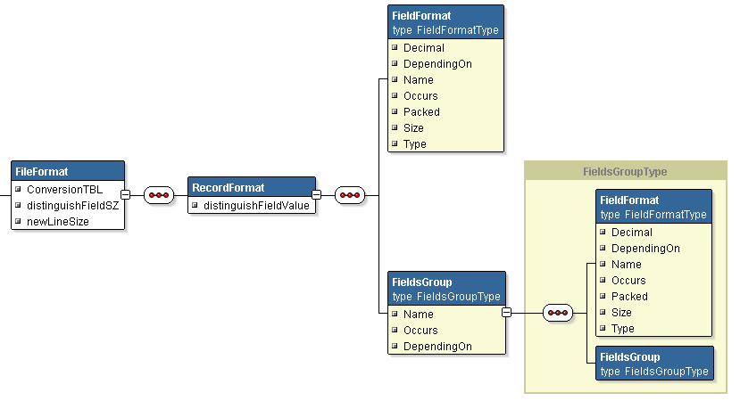

There are still mainframes, vms and as400s arround us plugged into a power. The aim of the project is to facilitate reading their data files stored in EBCDIC format and give you possibility to do with them what you want.
cobol2j is a java library written to read original EBCDIC data file which comes from COBOL or RPG system. It also reads files already converted from EBCDIC to ASCII. The advantage of cobol2j is that it reads data types like: numeric fields ( signed and unsigned ), packed decimals, packed date and text fields. Those fields come from ancient 70s times when people saved work and paper. Paper? Yes, data came to 70s-puters on a paper and it was reasonable to pack two digits on one byte in BCD format to save it.
My first cobol2j application was an programatic interface to another system. Another application was to present some AS/400 data on the web page. cobol2j gives you mainframe data as Java Bean. Then you can create pdf, excel file, generate sql statements to import data to a database or just connect to database with JDBC and push in all you read with cobol2j.
There are many code pages in both EBCDIC and ASCII world and you should know source and destination code pages for your data. This point is optional when you use native EBCDIC to ASCII export facilities ( ones comes with EBCDIC machines ).
Reading EBCDIC text-only file requires EBCDIC to ASCII conversion tables and knowledge of codepages only. It is relatively easy operation and it is even available on some web pages as online web converters. cobol2j challenge is to read flat data files with record structure ( very often more than one record structure in one file! ) : text, numeric, date, packed decimals, zoned, signed and unsigned fields, etc. This require you to know data structure because such source files are binary files and simple text conversion will not do the job here. The knowledge of data structure is required even if your in-house EBCDIC to ASCII conversion is already done. Simple knowledge of data structure is enought. No need of any special file.
Fresh untuched binary data without conversion errors is very welcome input data for cobol2j. It requires to choose right EBCDIC to ASCII conversion table and to define a data structure.
You have a file that is already preprocessed with some external tools. There are also environments where cobol or RPG data are processed in ASCII format. Baby/36 is an example. In that case the fist part of the job is already done and the only thing you should need to do is to define the data structure of the file.
Some data files may have conversion errors. It is quite common that you have a file converted from EBCDIC to ASCII in the way like it was a text file only. cobol2j provides some auto-correction facilities and let you read some bad files with 0% data loss. Here are two cases when input files are in error:
The file was converted with wrong table. Then it can be read by cobol2j but text fields will have some bad characters.
The file was converted as it was text-only file. It still can be read by cobol2j. Text fields will be ok. Non-packed signed and unsigned numeric fields are corrected with automatic failover machanism. Packed decimal and date fields will be corupted. No way to recover original values except you know applied conversion tables. Failover not supported now.
If your EBCDIC file includes characters that looks like us-ascii or latin-1 characters on original machine then table EBCDIC 037 -> ISO 8859-1 is ready for you. If you use other character set then please donate your conversion table to the project.
Conversion table is a java class that extends net.sf.cobol2j.AbstractConversionTBL and implements only one method:
public byte convert(byte data);
Whatever you do with EBCDIC data files you need to know structure. The definition have to be another java class which extends: net.sf.cobol2j.FileFormat class.
FileFormat class let you define:
| Field Type | Cobol example | Java type | cobol2j field definition | Remarks |
|---|---|---|---|---|
| Text | X(11) | java.lang.String | X | just text |
| Numeric ( decimal ) | S9(5)V99 COMP-3 | java.math.BigDecimal | 9 | can be packed or not |
| Date | 9(8) | java.lang.String | D | many possible patterns so parse yourselve to have java.util.Date |
| Binary ( 2's rep. of number ) | 9(8) BINARY | java.math.BigInteger | B | simple conversion to BigInteger, no sign and point support yet |
| Hex dump | any | java.lang.String | H | this let you see data as text hexadecimal dump |
package test;
|
If you are bored with own programming and want to see immediatly your data you can hex dump it with:
for unix:
java -cp commons-logging.jar:cobol2j.jar net.sf.cobol2j.RecordSet EBCDIC|ASCII recLen recSeparatorLen < ebcdic.file > asciiHexDump.file
for Windows:
java -cp commons-logging.jar;cobol2j.jar net.sf.cobol2j.RecordSet EBCDIC|ASCII recLen recSeparatorLen < ebcdic.file > asciiHexDump.file
where commons-logging.jar is from Apache Jakarta Commons Logging. recLen is a length of your record and recSeparatorLen should be 0.
Now cobol2j has a load and save feature that let you keep file format definition in an xml file. Here is an example file: YourFileFormat.xc2j. You need two more libraries to run this example: xercesImpl.jar from http://xerces.apache.org/xerces2-j/ and poi-2.5.1-final-20040804.jar from http://jakarta.apache.org/poi/ The command will be:java -cp commons-logging.jar:cobol2j.jar:xercesImpl.jar:poi-2.5.1-final-20040804.jar test.Cobol2ExcelTest2 YourFileFormat.xc2j < cobol.file > sheet.xls
package test;
|
cobol2j supports "OCCURS" and "DEPENDING ON" since release 1.2. The file structure definition has been extended to support it in both xml file and programatically. RecordFormat and FieldsGroup both are derived from FieldsList which has a possibility to add both FieldFormat and FieldsGroup. The last can be added recursively. See xml schema drawing. Boxes represent tags structure with attributes. You can also use FileFormat.xsd
cobol2j was tested and is used to process series of files from mainframe and from AS/400 in production environment but it is too few tests to avoid problems with field decryption.
When you have exceptions while processing then the fastest way to go is define questionable fields as hex. Then you can analyse field content and choose the right field type.
I am aware of that one or two field types need better implementation. Especially with external signs or even signed binary type.
If you have fields that are not decoded properly with cobol2j then please send me your example data then I will implement it.